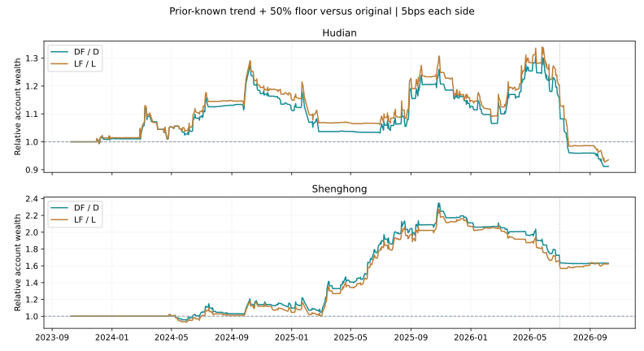

趋势中保留50%底仓：胜率80%就更好吗？
一条固定规则 · 192组完整账户对照 · 沪电与胜宏 · 不更换默认
结论：改善部分踏空，但没有满足回撤优先的要求
沪电近三年融资方案，保留趋势底仓后，完整持仓周期胜率从74/102（72.55%）升至24/30（80%），累计领先全仓的交易日比例也提高；但净收益从1226.51%降至1140.69%，最大回撤从25.20%扩大至26.71%，最差5%交易日平均亏损从6.05%扩大至6.31%。这个80%不能解释成日内做T胜率，更不能据此直接启用。
胜宏的趋势踏空确实得到改善：融资净收益从300.94%提高至550.44%，但最大回撤也从48.39%扩大至49.63%。更早历史中，两只股票、现金与融资四组的回撤均恶化。按当前优先胜率与控制回撤的目标，这条规则尚不具备替换默认的证据。
先固定规则，再算结果
只读取前一交易日收盘前已知行情，以及严格早于交易日披露的财报。在原D策略因为RSI(2)>60、同时利润同比增长为正而计划清仓的日期，若前日收盘高于60日均线，且前日120日均线高于20个交易日前的120日均线，则把目标0%改为50%；其他目标保持原样。
沿用原计划的09:45或10:00执行时间，只隔离检验目标仓位这一处改动。新增50%目标不放大为融资仓位，只有原来的100%目标仍可按原规则放大至150%。这并非“永不再买的底仓”：当账户已空仓而条件满足时，也会尝试买回50%。目标与真实模拟成交后的仓位不同，仍受整手、费用、成交量和T+1限制。
趋势条件复用此前融资研究，未在本轮挑选最优均线。此前G方案同时改了多种状态的仓位，旧保仓方案还混合MA20及成交量；本轮只改一个高RSI退出条件。没有网格调参，没有根据沪电或胜宏结果重选参数。
三年完整账户：2023-10-09至2026-10-08
| 股票／方案 | 净收益 | 最大回撤¹ | 平均仓位 | 完整周期胜率² | 盈利日／全部日 | 最差5%日均收益 |
|---|---|---|---|---|---|---|
| 沪电／全仓持有 | 423.59% | 48.19% | 98.80% | 没有已结束周期 | 374/727=51.44% | -7.28% |
| 沪电／原现金 | 537.26% | 19.18% | 44.16% | 76/109=69.72% | 278/727=38.24% | -4.32% |
| 沪电／原融资 | 1226.51% | 25.20% | 59.37% | 74/102=72.55% | 281/727=38.65% | -6.05% |
| 沪电／固定50% | 156.82% | 27.08% | 49.87% | 没有已结束周期 | 375/727=51.58% | -3.72% |
| 沪电／趋势底仓·现金 | 480.99% | 22.51% | 58.43% | 25/35=71.43% | 332/727=45.67% | -4.60% |
| 沪电／趋势底仓·融资 | 1140.69% | 26.71% | 74.19% | 24/30=80.00% | 334/727=45.94% | -6.31% |
| 胜宏／全仓持有 | 818.57% | 55.12% | 99.55% | 没有已结束周期 | 340/727=46.77% | -8.62% |
| 胜宏／原现金 | 191.85% | 34.50% | 38.15% | 61/98=62.24% | 226/727=31.09% | -5.63% |
| 胜宏／原融资 | 300.94% | 48.39% | 53.04% | 58/96=60.42% | 225/727=30.95% | -8.37% |
| 胜宏／固定50% | 264.75% | 32.39% | 50.02% | 没有已结束周期 | 340/727=46.77% | -4.30% |
| 胜宏／趋势底仓·现金 | 376.00% | 36.74% | 52.35% | 16/26=61.54% | 283/727=38.93% | -5.86% |
| 胜宏／趋势底仓·融资 | 550.44% | 49.63% | 67.05% | 18/27=66.67% | 282/727=38.79% | -8.28% |
¹ 最大回撤按5分钟采样及官方日收盘计量，不能当作逐笔极值回撤。² 完整周期指空仓到再次空仓，含费用与融资利息；固定50%及全仓仍未结束，不计算周期胜率。各账户100万元独立起步，主表单边滑点5基点。

曲线高于1表示新增底仓方案当日累计资产高于原方案；它是同一本金连续账户之比。竖虚线为2026年7月1日。主结果显示：提高上涨参与度与降低回撤不是同一件事。
80%的分母变了，不能说买卖点变准了
减少清仓把原本独立的多次交易合并成更长持仓，周期之间不能一一配对。已完成亏损周期占比可能下降，但持仓中间的亏损仍然存在；未结束周期也不会进入胜率分母。必须同时看账户回撤和未平仓损益。
| 方案 | 盈利／完整周期 | 周期中位／最长交易日 | 盈利周期平均收益 | 亏损周期平均收益 | 未结束周期市值损益（元） | 盈利日／非平盘日 |
|---|---|---|---|---|---|---|
| 沪电／原现金 | 76/109 | 4.0 / 16 | 3.76% | -2.63% | -192,318 | 52.06% |
| 沪电／趋势底仓·现金 | 25/35 | 4.0 / 116 | 9.27% | -1.89% | -274,406 | 51.00% |
| 沪电／原融资 | 74/102 | 4.0 / 16 | 5.10% | -3.51% | -411,989 | 52.72% |
| 沪电／趋势底仓·融资 | 24/30 | 5.5 / 116 | 14.00% | -2.38% | -583,290 | 50.76% |
| 胜宏／原现金 | 61/98 | 4.0 / 19 | 4.65% | -4.10% | -220,283 | 50.11% |
| 胜宏／趋势底仓·现金 | 16/26 | 5.5 / 280 | 23.11% | -3.47% | -364,274 | 49.48% |
| 胜宏／原融资 | 58/96 | 3.5 / 19 | 6.76% | -5.42% | -468,082 | 50.11% |
| 胜宏／趋势底仓·融资 | 18/27 | 6.0 / 280 | 28.67% | -7.07% | -657,412 | 49.21% |
所有未结束周期均按市值计入累计净值、回撤与损益，上表单列其损益。周期平均收益是不加权平均，不能与复利总收益直接相加。没有定义独立日内往返，所以本批不报告“做T成功率”。空仓和平盘也没有算成盈利日。
7月前后：保住前半段上涨，也多承担后半段风险
| 方案 | 截至2026-06-30连续收益 | 7月1日起连续收益 | 累计领先全仓 | 最长落后全仓 | 63日滚动领先全仓 |
|---|---|---|---|---|---|
| 沪电／原现金 | 381.11% | 32.46% | 23.93% | 276日 | 47.97% |
| 沪电／原融资 | 779.53% | 50.82% | 61.90% | 235日 | 53.98% |
| 沪电／趋势底仓·现金 | 457.99% | 4.12% | 25.86% | 270日 | 52.93% |
| 沪电／趋势底仓·融资 | 958.93% | 17.16% | 76.62% | 151日 | 67.22% |
| 胜宏／原现金 | 239.95% | -14.15% | 13.07% | 630日 | 32.48% |
| 胜宏／原融资 | 402.78% | -20.26% | 13.48% | 569日 | 38.65% |
| 胜宏／趋势底仓·现金 | 486.95% | -18.90% | 13.07% | 630日 | 27.22% |
| 胜宏／趋势底仓·融资 | 734.24% | -22.03% | 13.07% | 630日 | 33.83% |
沪电融资7月前收益从779.53%提高至958.93%，但7月后从50.82%降至17.16%。累计领先比例从61.90%升至76.62%，最长落后由235日缩至151日，却并未带来更低回撤。以上两段承接之前持仓，复利相乘，不能直接相加；下载文件中另有各段重新起步的结果，二者不能混用。
按时间顺序检验：早期改善不能预测后期稳定
early为2023-10-09至2024年底，later为2025年初至2026-06-30，julyOn为2026-07-01至数据末日；每段从100万元重新起步。规则没有在early拟合，表格是时间分段检验；这些行情早已被研究过，不能称为新盲测。
| 股票 | 区间 | 方案 | 净收益 | 最大回撤 | 周期胜率 |
|---|---|---|---|---|---|
| 沪电 | early | 原现金 | 44.39% | 16.27% | 27/40=67.50% |
| 沪电 | early | 原融资 | 64.81% | 20.34% | 28/40=70.00% |
| 沪电 | early | 趋势底仓·现金 | 60.98% | 15.16% | 12/17=70.59% |
| 沪电 | early | 趋势底仓·融资 | 90.42% | 19.13% | 11/14=78.57% |
| 沪电 | later | 原现金 | 220.00% | 19.96% | 40/57=70.18% |
| 沪电 | later | 原融资 | 482.72% | 25.93% | 38/55=69.09% |
| 沪电 | later | 趋势底仓·现金 | 237.61% | 23.07% | 9/14=64.29% |
| 沪电 | later | 趋势底仓·融资 | 508.55% | 27.74% | 10/15=66.67% |
| 沪电 | julyOn | 原现金 | 27.92% | 15.26% | 8/12=66.67% |
| 沪电 | julyOn | 原融资 | 37.17% | 22.90% | 8/12=66.67% |
| 沪电 | julyOn | 趋势底仓·现金 | 0.30% | 20.26% | 5/7=71.43% |
| 沪电 | julyOn | 趋势底仓·融资 | 7.17% | 27.03% | 5/7=71.43% |
| 胜宏 | early | 原现金 | 6.95% | 34.50% | 16/26=61.54% |
| 胜宏 | early | 原融资 | 5.48% | 48.39% | 15/26=57.69% |
| 胜宏 | early | 趋势底仓·现金 | 17.33% | 36.74% | 2/4=50.00% |
| 胜宏 | early | 趋势底仓·融资 | 10.37% | 49.63% | 2/5=40.00% |
| 胜宏 | later | 原现金 | 216.26% | 30.63% | 40/61=65.57% |
| 胜宏 | later | 原融资 | 376.11% | 43.75% | 39/60=65.00% |
| 胜宏 | later | 趋势底仓·现金 | 392.61% | 28.86% | 9/11=81.82% |
| 胜宏 | later | 趋势底仓·融资 | 656.28% | 41.08% | 9/11=81.82% |
| 胜宏 | julyOn | 原现金 | -14.25% | 25.85% | 4/11=36.36% |
| 胜宏 | julyOn | 原融资 | -22.20% | 36.81% | 4/11=36.36% |
| 胜宏 | julyOn | 趋势底仓·现金 | -19.18% | 25.77% | 4/11=36.36% |
| 胜宏 | julyOn | 趋势底仓·融资 | -27.01% | 36.87% | 4/11=36.36% |
三个固定年度及更早历史
year1、year2、year3分别从2023、2024、2025年10月9日开始，至次年10月8日止；older为2020-01-02至2023-09-28，每段独立起步。
| 股票 | 区间 | 方案 | 净收益 | 最大回撤 | 完整周期／胜率 |
|---|---|---|---|---|---|
| 沪电 | older | 原现金 | -20.02% | 59.42% | 63 / 60.32% |
| 沪电 | older | 原融资 | -23.97% | 72.81% | 57 / 64.91% |
| 沪电 | older | 趋势底仓·现金 | -15.62% | 59.91% | 43 / 44.19% |
| 沪电 | older | 趋势底仓·融资 | -26.46% | 73.58% | 40 / 55.00% |
| 沪电 | year1 | 原现金 | 29.07% | 16.27% | 30 / 66.67% |
| 沪电 | year1 | 原融资 | 41.74% | 20.34% | 29 / 72.41% |
| 沪电 | year1 | 趋势底仓·现金 | 64.42% | 15.16% | 11 / 72.73% |
| 沪电 | year1 | 趋势底仓·融资 | 82.93% | 19.13% | 10 / 80.00% |
| 沪电 | year2 | 原现金 | 67.37% | 19.71% | 39 / 71.79% |
| 沪电 | year2 | 原融资 | 126.88% | 26.20% | 39 / 69.23% |
| 沪电 | year2 | 趋势底仓·现金 | 59.54% | 23.06% | 17 / 52.94% |
| 沪电 | year2 | 趋势底仓·融资 | 118.00% | 27.56% | 17 / 58.82% |
| 沪电 | year3 | 原现金 | 179.16% | 15.30% | 40 / 70.00% |
| 沪电 | year3 | 原融资 | 334.20% | 22.96% | 42 / 69.05% |
| 沪电 | year3 | 趋势底仓·现金 | 112.16% | 20.31% | 10 / 80.00% |
| 沪电 | year3 | 趋势底仓·融资 | 222.45% | 27.12% | 10 / 80.00% |
| 胜宏 | older | 原现金 | -4.50% | 47.10% | 48 / 66.67% |
| 胜宏 | older | 原融资 | -6.67% | 60.81% | 38 / 63.16% |
| 胜宏 | older | 趋势底仓·现金 | -2.30% | 50.73% | 20 / 70.00% |
| 胜宏 | older | 趋势底仓·融资 | -4.61% | 62.62% | 18 / 66.67% |
| 胜宏 | year1 | 原现金 | -0.03% | 34.50% | 18 / 55.56% |
| 胜宏 | year1 | 原融资 | -6.41% | 48.39% | 16 / 43.75% |
| 胜宏 | year1 | 趋势底仓·现金 | 20.63% | 36.74% | 4 / 50.00% |
| 胜宏 | year1 | 趋势底仓·融资 | 10.98% | 49.63% | 5 / 40.00% |
| 胜宏 | year2 | 原现金 | 120.02% | 23.04% | 40 / 70.00% |
| 胜宏 | year2 | 原融资 | 201.59% | 30.42% | 40 / 67.50% |
| 胜宏 | year2 | 趋势底仓·现金 | 292.88% | 25.60% | 0 / — |
| 胜宏 | year2 | 趋势底仓·融资 | 426.26% | 32.73% | 0 / — |
| 胜宏 | year3 | 原现金 | 31.96% | 25.98% | 40 / 57.50% |
| 胜宏 | year3 | 原融资 | 38.50% | 37.21% | 40 / 55.00% |
| 胜宏 | year3 | 趋势底仓·现金 | 3.27% | 28.39% | 23 / 60.87% |
| 胜宏 | year3 | 趋势底仓·融资 | 7.72% | 37.01% | 23 / 60.87% |
| 方案 | 年度回撤改善数 |
|---|---|
| 沪电／趋势底仓·现金 | 1/3 |
| 沪电／趋势底仓·融资 | 1/3 |
| 胜宏／趋势底仓·现金 | 0/3 |
| 胜宏／趋势底仓·融资 | 1/3 |
沪电现金与融资各只有1/3年度回撤改善；胜宏现金0/3，融资1/3，没有跨过至少2/3年度的稳定性检查。胜宏第二年度新增底仓方案一直没有完成清仓，完整周期胜率留空，不能因高收益记为100%胜率。
滚动与季度检查
下面从三年连续账户按季度切片，季度回撤按日收盘、以季初资产为起点，故与主表5分钟最大回撤口径不同。只汇总至少40个交易日的季度，排除只有1天的2026Q4；这不是重新训练或独立样本。
| 方案 | 季度收益优于原方案 | 季度回撤小于原方案 | 63日滚动收益优于原方案 |
|---|---|---|---|
| 沪电／趋势底仓·现金 | 6/12 | 0/12 | 60.60% |
| 沪电／趋势底仓·融资 | 7/12 | 1/12 | 61.35% |
| 胜宏／趋势底仓·现金 | 7/12 | 1/12 | 53.83% |
| 胜宏／趋势底仓·融资 | 5/12 | 3/12 | 52.78% |
增加底仓后，沪电现金在这些季度中没有一次回撤更小。滚动收益改善比例高于一半，仍不能抵消少数大幅落后的区间；重叠窗口高度相关，不应视为独立的多次成功验证。
单边10基点滑点：结论没有逆转
| 股票／方案 | 净收益 | 最大回撤¹ | 平均仓位 | 完整周期胜率² | 盈利日／全部日 | 最差5%日均收益 |
|---|---|---|---|---|---|---|
| 沪电／原现金 | 460.52% | 19.75% | 44.19% | 73/108=67.59% | 288/727=39.61% | -4.34% |
| 沪电／原融资 | 1081.02% | 25.95% | 59.74% | 68/100=68.00% | 278/727=38.24% | -6.08% |
| 沪电／趋势底仓·现金 | 434.55% | 23.17% | 58.45% | 27/38=71.05% | 331/727=45.53% | -4.62% |
| 沪电／趋势底仓·融资 | 1009.17% | 27.36% | 74.38% | 25/33=75.76% | 330/727=45.39% | -6.34% |
| 胜宏／原现金 | 165.21% | 34.82% | 38.09% | 61/98=62.24% | 223/727=30.67% | -5.65% |
| 胜宏／原融资 | 246.28% | 48.77% | 53.06% | 57/97=58.76% | 225/727=30.95% | -8.40% |
| 胜宏／趋势底仓·现金 | 348.78% | 36.99% | 52.34% | 17/27=62.96% | 283/727=38.93% | -5.87% |
| 胜宏／趋势底仓·融资 | 484.60% | 49.96% | 67.18% | 17/26=65.38% | 283/727=38.93% | -8.34% |
沪电融资底仓方案完整周期胜率降为25/33（75.76%），回撤仍比原融资更大。手续费、整数股和成交容忍区间会改变交易路径，不能把5基点的80%固定套到其他执行条件。
执行核验、证据边界及后续方向
共192组完整账户；384项原基准指标精确复现，5871笔完整区间账本、3578笔买入额度通过检查；3274个交易日用截断到前日的价格重新验证趋势条件。全部12组完整区间持仓周期损益与账户收益核对一致。
沿用实际佣金万1、最低5元，按日期的印花税和过户费，T+1、100股、前根5分钟成交量1%及每笔30万股上限、交易所涨跌停，融资年息6%。每笔融资买入后欠款不得超过当前净资产50%；按已授权规则允许持有期被动超仓，但真实担保约束仍保留。策略分红税按20%简化，长期全仓基准按0%，不是个人税务精算；固定50%使用与策略一致的税率。
行情复用至2026-10-08；10月9日分钟极值与日线不一致，尚未纳入已核验回测。原有分钟数据质量、历史财报修订版本及融资资格问题仍在，本轮未解决。今日休市，没有冻结后新增交易样本。交易规则来源沿用此前深交所公开资料的核验回执，本次再次打开链接超时，未冒称重新核验成功。
目前能支持的判断是：长期趋势条件有助于解释踏空，但单靠均线状态不足以控制趋势结束时的损失。下一批应只检验一个预先固定的失效条件能否减少新增底仓的尾部损失，并重新检查是否只是恢复清仓、牺牲此前参与度；不能围绕已见7月跌势反复挑阈值。
原现金“保留全仓收益并降低回撤25%”及财富1.20倍仍留作历史对照，不宣称本批达标。按最新风险优先偏好，本轮判为“参与度有改善，风险改善证据不足”，默认保持不变。